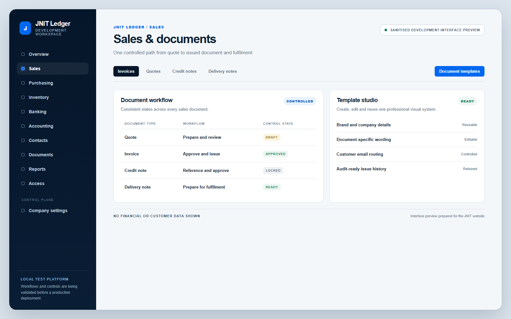
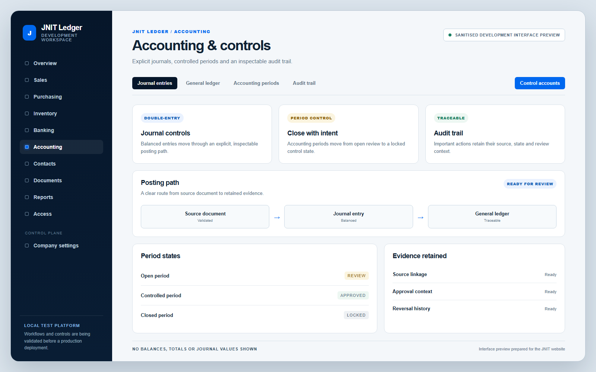
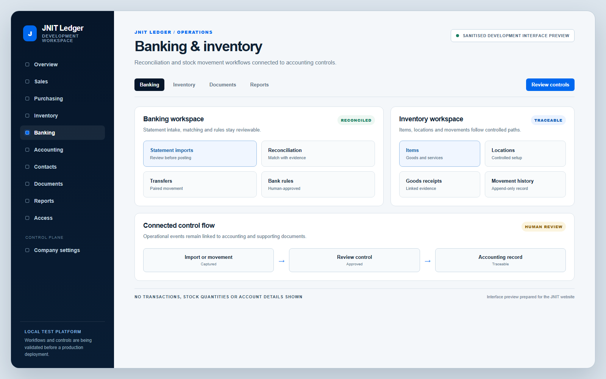

Sales
Quotes, invoices, credit notes, delivery notes, receipts and customer statements.

JNIT Ledger / Active development
Sales, purchasing, banking, inventory, accounting, documents and reporting—brought together in one controlled platform.
Local development/test platform. JNIT is validating real workflows, accounting controls and recovery procedures before any production deployment.

One connected system
Ledger is being built around the full operational path, so the source document, review decision, accounting entry and supporting evidence remain connected.
Quotes, invoices, credit notes, delivery notes, receipts and customer statements.
Supplier bills, credits, payments, statements, receiving and attached evidence.
Statement imports, transfers, reconciliation, rules and human-reviewed suggestions.
Goods and services, locations, receipts, transfers, adjustments and movement history.
Chart of accounts, double-entry journals, periods, general ledger and audit trail.
Supporting files, checksums, upload history and reusable sales document templates.
Core financial reports, ageing, cash movement, VAT activity and inventory valuation.
Company isolation, roles, protected actions and explicit administrative control.
Inside the platform
These sanitised development previews show the working structure without exposing real financial, customer, supplier or banking information.

Quotes, invoices, credit notes and delivery notes share a controlled workflow and reusable templates.

Journals, periods, control accounts and audit history remain connected and reviewable.

Imports, matching and stock movements follow human-reviewed paths into the ledger.
The analytics image uses fictional demonstration figures. The remaining previews contain no financial values or personal information.
Designed for control
The platform is being engineered so important actions can be explained, reviewed and recovered—not merely completed.
Balanced entries form the accounting foundation behind operational documents.
Bank activity is matched to known records with evidence and an explicit review step.
Company context is enforced across data access and protected operations.
Critical changes retain the actor, source, state and reason needed for review.
Open, reviewed and closed periods make accounting cut-offs deliberate.
Editable templates keep invoices, quotes, credit notes and delivery notes consistent.
Recovery is treated as a testable procedure, not simply a stored copy.
Automation can suggest and prepare; accountable decisions stay visible to people.
Planned production architecture
The production architecture is planned; it is not deployed yet. The local platform will move only after its workflows, controls, security boundaries and recovery process are ready.
Future roadmap
JNIT OS is a future vision, not a current product. Ledger is intended to become its financial core: the place where operational work becomes controlled business records.
Discuss a connected business platformBuilt around the work
JNIT combines product thinking, accounting controls, web engineering and planned cloud delivery into one considered platform.
Discuss your system